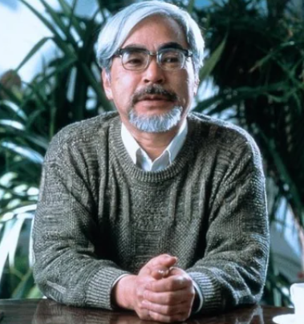

 1963年进入东映动画公司，从事动画师工作。1971年加入手冢治虫成立的““虫Production动画部”。1974年加入Zuiyou映像与高田勋、小田部羊一共同创作《阿尔卑斯山的少女》。1979年转入东京电影新社创作了自己首部电影《鲁邦三世卡里奥斯特罗之城》。
1982年开始独立创作漫画，在《Animage》上连载漫画《风之谷》，该作品获得第23届日本漫画家协会赏。1984年执导《风之谷》，该片获得罗马奇幻电影节最佳动画短片奖等4项大奖。
1985年与高田勋、铃木敏夫共同创立吉卜力工作室。1986年执导《天空之城》，该片获得第41回每日电影奖大藤信郎赏等6项大奖。1988年执导《龙猫》，该片荣获第13回报知电影奖最佳导演奖等24项大奖。1997年执导《幽灵公主》，该片荣获第21届日本电影学院奖最佳影片奖等27项大奖。
宫崎骏的作品以其深刻的主题、精美的画面和动人的音乐闻名于世。他的电影常常探讨人与自然的关系、成长的主题以及人性的复杂性，深受全球观众喜爱。他的作品不仅在日本国内广受欢迎，在国际上也获得了极高的评价，对世界动画电影产生了深远影响。